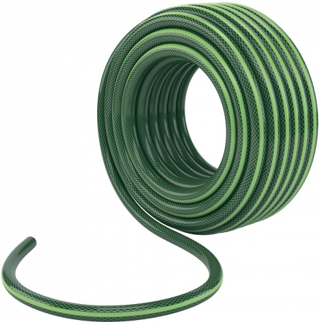
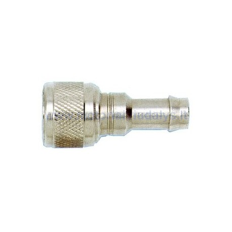
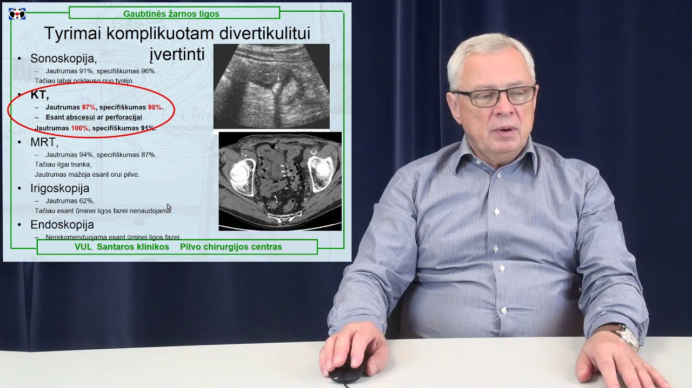

Žarnos
2020.10.28 06:29

+370 46 355494
Parsisiųsti PDF katalogą
Lietuva Lietuva Ukraina Latvija Baltarusija Estija Lenkija LT LT EN LT EN Naujienos Apie mus Įmonė Karjera Privatumo politika Produktai Gamintojai Paslaugos Vaizdo atpažinimo sistemos Diagnostika Techninės inžinerinės konsultacijos Robotizavimo ir automatizavimo paslaugos Kompresorių ir suspausto oro įrengimų servisas Hidraulinių sistemų servisas Kontaktai AtsisiuntimaiŽarnos
Titulinis › Kiti produktai › ŽarnosKalbant apie pramonines žarnas ir jų sistemas, NORRES – Jūsų patikimiausias partneris ir patarėjas! NORRES Schlauchtechnik GmbH (Vokietija), įsteigta 1889 metais, yra pasaulinio masto pirmaujanti pramoninių žarnų, žarnų sistemų ir kitų inovatoriškų aukštos kokybės plastikinių gaminių gamintoja , nuolat pildanti bei tobulinanti savo produkciją, atsižvelgdama į augančius kokybės reikalavimus, ieškanti sprendimų, galinčių optimizuoti įvairių pramonės šakų įmonių darbą.
ISO 9001:2008 standarto sertifikatas įrodo NORRES įsipareigojimą nuolat siekti kokybės ir klientų pasitikėjimo, tiek produktų gamyboje, tiek aptarnavime bei produkcijos pristatyme klientui. Atitiktis ATEX direktyvų, UL, FDAir daugelio kitų standartų bei specifikacijų įvairiose pramonės šakose tik dar kartą pabrėžia NORRES patikimumą ir aukštą kokybę.
Apie gamintoją: www.norres.com
Suspausto oro ir pneumatinės žarnos, profiliai (su/be įdėklų)
Oro kondicionavimo ir ventiliavimo žarnos
Karšto oro perdavimui ir aukštai temperatūrai pritaikytos žarnos
Dujų gavybos žarnos
Metalinės žarnos
Specialios žarnos maisto pramonei
Elektra varomos žarnos, antistatinės žarnos
Liepsnai atsparios poliuretano žarnos medienos pramonei
Siurblių ir išleidimo žarnos
PVC, EVA ir PE siurblių bei perdavimo žarnos
Atsparios Pre-PUR siurbimo ir transportavimo žarnos
Produktai
Robotai Pramoniniai robotai KUKA Kolaboratyvūs robotai UR Mobilios autonominės platformos Delta robotai Griebtuvai Vakuuminiai griebtuvai Mechaniniai griebtuvai Magnetiniai griebtuvai Kiti griebtuvai Robotų priedai Onrobot quick/dual changer Onrobot jėgos ir momento jutiklis Onrobot eyes kamera Automatika Dažnio keitikliai Švelnūs paleidėjai Servo pavaros Valdikliai Jutikliai, enkoderiai Aptikimo ir nustatymo sprendimai Atstumo jutikliai Enkoderiai Skysčių jutikliai Foto elektroniniai jutikliai Padėties davikliai Registracijos jutikliai Saugos sistemos Vaizdo atpažinimo sistemos 2D Vision Products 3D vaizdo sistemos Vision Programinė įranga Barkodų skaitytuvai Elektromechanika Elektros varikliai Reduktoriai, motoreduktoriai Motobūgnai Susiję produktai Dažnio keitikliai Švelnūs paleidėjai Elektros instaliacijos komponentai Movos Vakuuminės sistemos Siurbtukai, vakuuminiai siurbliai, priedai Vakuuminiai siurbtukai Vakuuminiai siurbliai Vakuuminių sistemų priedai Griebtuvai, orapūtės Individualūs griebtuvai Standartiniai griebtuvai Griebtuvų priedai Vakuumo generatoriai ir jų priedai Vakuuminiai transporteriai, konvejeriai Ergonominiai keltuvai Pneumatika Oro paruošimo blokai Pneumatiniai cilindrai Standartiniai cilindrai ir cilindrai su smeigėmis Trumpos eigos ir kompaktiniai cilindrai Bekočiai cilindrai Mini ir apvalūs cilindrai Kitų serijų cilindrai Pneumatinių cilindrų priedai Skirstytuvai Pneumatikos priedai Mechanika Grandinės Diržai, juostos Judesio perdavimo elementai Kardanai Žvaigždutės Krumpliaračiai Skriemuliai Linijinės sistemos Lengvieji kranai Guoliai Guoliai Guoliavietės Flanšai Rolgangai Rolgangai Antivibracinės sistemos Variklių padai Dujinės spyruoklės Demferiai Movos Kardanai Aktuatoriai Hidraulika Automatinės tepimo sistemos Suspausto oro sistemos Oro paruošimo sistemos Kompresoriai Skysčių perdavimo sistemos Produktai maisto ir medicinos pramonei Standartiniai įrengimų elementai Aliuminio profiliai Aliuminio profilių tvirtinimo elementai Bėgeliai Įrenginių kojelės Vyriai Ratukai Rankenos Užraktai Fiksatoriai Matavimo prietaisai Magnetai Sandarinimo guma Pramoniniai šepečiai Darbo vietos ir įrankiai Stacionarios darbo vietos Paletavimo sistemos Kiti produktai Žarnos Rotacinės movos Plovimo elementaiApdovanojimai
Narystė asociacijose
Klaipėdos pramonininkų asociacija
Klaipėdos prekybos, pramonės ir amatų rūmai
Šiaulių pramonininkų asociacija
Klauskite mūsų
Klauskite mūsų
+370 46 355 494
info@techvitas.lt
Dubysos g. 66A, Klaipėda
© 2019 UAB „Techvitas“
Sukūrė- Vandens žarnos | Guminės ir transportavimo žarnos - Hidrobalt
- Pramoninės žarnos - Hidrobalt
- Vandens žarnos - ErumAqua
- Lanksčios Žarnos - staliams.lt
- Žarnos, jungės dušams | Senukai.lt
- Žarnos
- Žarnos | TECHNOBALTIC
- Žarnos | www.siurbliai.lt
- Žarnos - Utenos Agroprekyba
- Storosios žarnos vėžio prevencinė programa
- Vandens žarnos | Guminės ir transportavimo žarnos - Hidrobalt
Pradinis » Komponentai pramonei » PRAMONINĖS ŽARNOS Ieškoti. Rodyti tik prekes sandėlyje Rodyti tik akcijines prekes Rodyti kainas su PVM PRAMONINĖS ŽARNOS. APKABOS (9) 5. 3. 1. PRAMONINĖS JUNGTYS (5) 2. 2. PNEUMOTRANSPORTO . VANDENIUI IR ORUI ...
- Pramoninės žarnos - Hidrobalt
Žarnos Jungimo movos Greitos jungtys Kištukai Oro paskirstytojai Antgaliai Poliravimui/ šlifavimui Pneumatiniai rinkiniai Pneumatiniai siaurapjūkliai AUTOSERVISO ĮRANKIAI Variklio ardymo, paskirstymo velenų fiksavimo, diržo, pompos skremulio, smagračio, alkūninių velenų įrankių rinkiniai Įrankiai variklio remontui Veleno remonto ...
- Vandens žarnos - ErumAqua
Gaisrinės žarnos vidaus čiaupams komplektas Ø 52 mm. (ilgis 20 m., 2galvutės GR-50(GOST ) 10 bar. Pagaminta ES
- Lanksčios Žarnos - staliams.lt
– Apie mus – Kontaktai – Privatumo politika – Pristatymas ir grąžinimas . Utenos Agroprekyba, UAB Stoties g. 28, Utena +370 699 95478. utenosagroprekyba@gmail.com
- Žarnos, jungės dušams | Senukai.lt
Dirgliosios žarnos sindromas (anglų k. “leaky gut syndrome”) yra sparčiai plintanti būklė, milijonai žmonių kovoja su ja arba net nežino, kad ja serga.Iš jo pavadinimo galite manyti, kad dirgliosios žarnos (“pralaidaus žarnyno”) sindromas paveikia tik virškinimo sistemą, tačiau iš tikrųjų tai gali sukelti daug kitų sveikatos problemų.
- Žarnos
Kraujavimas iš virškinamojo trakto – tai ūmus, gausus, dažnai lėtinis ir nepastebimas arba ,,slaptas“ kraujavimas iš viršutinės virškinimo kanalo dalies (stemplė, skrandis, dvylikapirštė žarna) ar apatinės virškinimo kanalo dalies (tuščioji, klubinė, storoji ir tiesioji žarna). Iš visų kraujavimo iš virškinamojo kanalo atvejų apie 80–90 % yra kraujavimas iš ...
- Žarnos | TECHNOBALTIC
Lanksčios žarnos. Read more. Prekių pristatymas. Prekės bus atvežtos į bet kurį Lietuvos miestą ar gyvenvietę, Jūsų nurodytu adresu, iki pat durų.
- Žarnos | www.siurbliai.lt
Dušo žarna Thema Lux 700015, 150 cm, 1/2'' Medžiaga: Nerūdijantis plienas, Polivinilchloridas (PVC) Žarnos ilgis: 150 cm
- Žarnos - Utenos Agroprekyba
Storosios žarnos vėžio prevencinė programa. Storosios žarnos vėžio ankstyvosios diagnostikos prevencinė programa teikiama asmenims nuo 50 m. iki 74 m. amžiaus, vieną kartą per dvejus metus. Dėl dalyvavimo programoje turėtų kreiptis į savo šeimos gydytoją. Programos priemonės:
- Storosios žarnos vėžio prevencinė programa
Reikalingos pramoninės žarnos vandeniui? Susipažinkite su mūsų asortimentu! Apollo SE, 202AA, Nettuno FF, Mercurio M, Hilcoflex, Klenet, Ragno CR ir kt.
Pradinis » Komponentai pramonei » PRAMONINĖS ŽARNOS Ieškoti. Rodyti tik prekes sandėlyje Rodyti tik akcijines prekes Rodyti kainas su PVM PRAMONINĖS ŽARNOS. APKABOS (9) 5. 3. 1. PRAMONINĖS JUNGTYS (5) 2. 2. PNEUMOTRANSPORTO . VANDENIUI IR ORUI ...
Žarnos Jungimo movos Greitos jungtys Kištukai Oro paskirstytojai Antgaliai Poliravimui/ šlifavimui Pneumatiniai rinkiniai Pneumatiniai siaurapjūkliai AUTOSERVISO ĮRANKIAI Variklio ardymo, paskirstymo velenų fiksavimo, diržo, pompos skremulio, smagračio, alkūninių velenų įrankių rinkiniai Įrankiai variklio remontui Veleno remonto ...
Gaisrinės žarnos vidaus čiaupams komplektas Ø 52 mm. (ilgis 20 m., 2galvutės GR-50(GOST ) 10 bar. Pagaminta ES
– Apie mus – Kontaktai – Privatumo politika – Pristatymas ir grąžinimas . Utenos Agroprekyba, UAB Stoties g. 28, Utena +370 699 95478. utenosagroprekyba@gmail.com
Dirgliosios žarnos sindromas (anglų k. “leaky gut syndrome”) yra sparčiai plintanti būklė, milijonai žmonių kovoja su ja arba net nežino, kad ja serga.Iš jo pavadinimo galite manyti, kad dirgliosios žarnos (“pralaidaus žarnyno”) sindromas paveikia tik virškinimo sistemą, tačiau iš tikrųjų tai gali sukelti daug kitų sveikatos problemų.
Kraujavimas iš virškinamojo trakto – tai ūmus, gausus, dažnai lėtinis ir nepastebimas arba ,,slaptas“ kraujavimas iš viršutinės virškinimo kanalo dalies (stemplė, skrandis, dvylikapirštė žarna) ar apatinės virškinimo kanalo dalies (tuščioji, klubinė, storoji ir tiesioji žarna). Iš visų kraujavimo iš virškinamojo kanalo atvejų apie 80–90 % yra kraujavimas iš ...
Lanksčios žarnos. Read more. Prekių pristatymas. Prekės bus atvežtos į bet kurį Lietuvos miestą ar gyvenvietę, Jūsų nurodytu adresu, iki pat durų.
Dušo žarna Thema Lux 700015, 150 cm, 1/2'' Medžiaga: Nerūdijantis plienas, Polivinilchloridas (PVC) Žarnos ilgis: 150 cm
Storosios žarnos vėžio prevencinė programa. Storosios žarnos vėžio ankstyvosios diagnostikos prevencinė programa teikiama asmenims nuo 50 m. iki 74 m. amžiaus, vieną kartą per dvejus metus. Dėl dalyvavimo programoje turėtų kreiptis į savo šeimos gydytoją. Programos priemonės:
Reikalingos pramoninės žarnos vandeniui? Susipažinkite su mūsų asortimentu! Apollo SE, 202AA, Nettuno FF, Mercurio M, Hilcoflex, Klenet, Ragno CR ir kt.
  